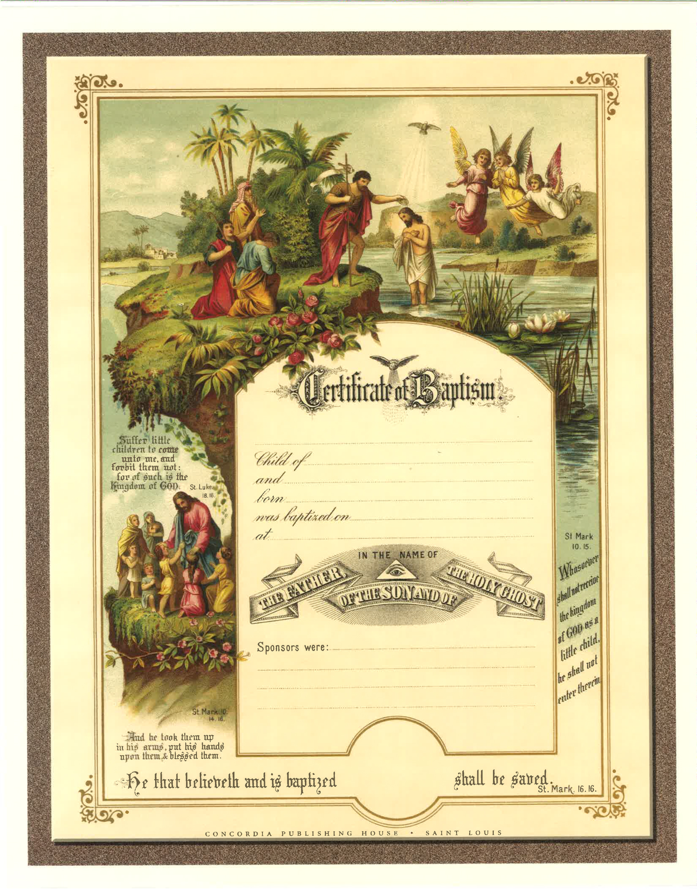

Baptism & Membership Records
Baptism Records
Child's full name and birth date
Parents' names (sometimes both!)
Baptism date and church
Godparents/sponsors
Membership Rolls
When people joined the church
Transfer letters from other churches
Family connections

Example of a Baptism Record